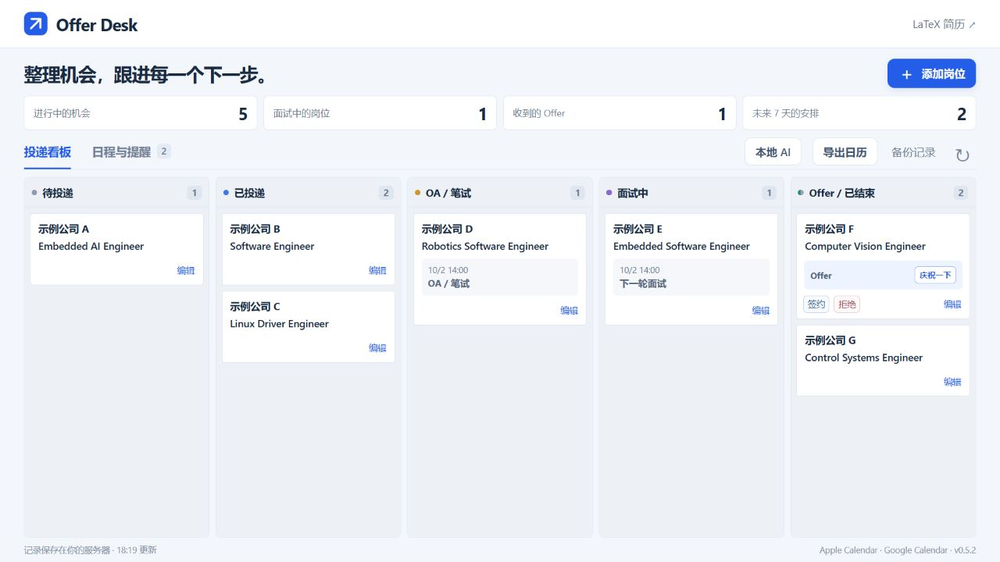
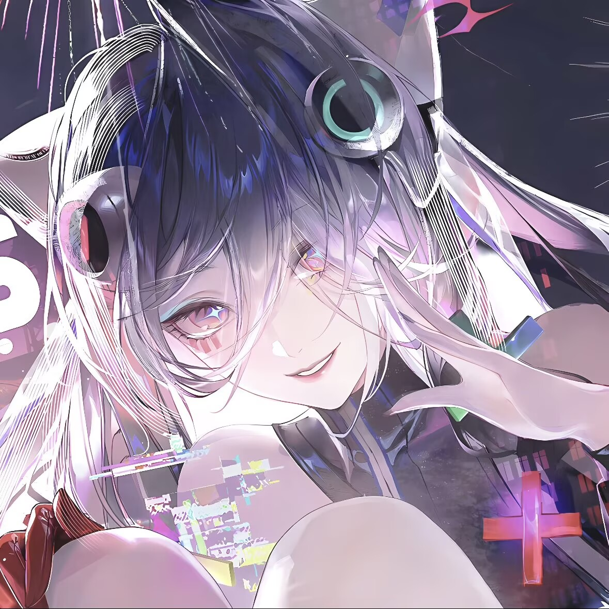

Embedded Vehicle Control
An NXP MCU vehicle controller built with Simulink and CAN, supporting manual driving, cruise control, and multi-vehicle simulation.
Case study in progressAutonomous Systems · Embedded AI
M.Eng. student in Autonomous System at the University of Michigan. My interests span robotics, control, computer vision, and embedded AI.
Selected work / 04
Projects spanning medical vision, robot state estimation, embedded control, and software with local AI.
Parameter-efficient fine-tuning of SAM2 with LoRA for brain tumor segmentation across MRI slices.
View case study ↗ 02 / RoboticsComparing six contact-aided filter variants for quadruped velocity estimation in Isaac Lab, including dynamic foot contacts and IMU bias modeling.
View case study ↗An NXP MCU vehicle controller built with Simulink and CAN, supporting manual driving, cruise control, and multi-vehicle simulation.
Case study in progress
An ongoing application-tracking workbench on Orange Pi, combining a web interface, persistent workflows, and local AI for email and job-description analysis.
Explore the project ↗Industry experience
May – August 2026 · Shanghai, China
Driver Development Engineer Intern · Global R&D Center
About / Collaboration
My interests span autonomous systems, control, robotics, computer vision, and embedded AI. I enjoy connecting algorithms with hardware and software, from state estimation to local model inference on edge devices.

Ziyun Guo ↗Research Engineer · Singapore Management UniversityGet in touch